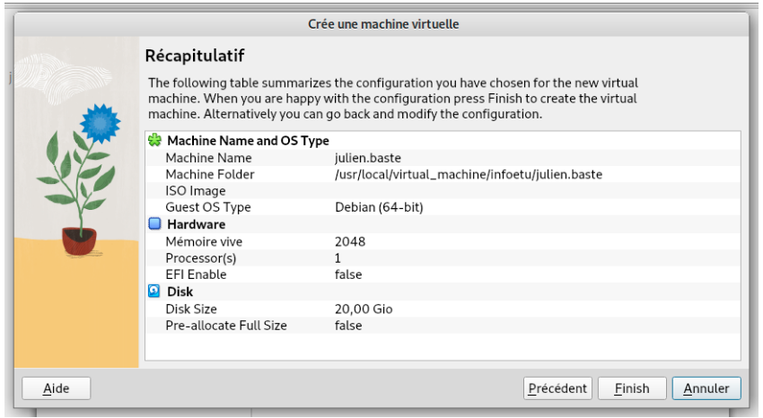

Contact
Administrer des systèmes informatiques communicants — Mise en place d'un environnement Linux complet sous VirtualBox et rédaction d'un guide technique en anglais.
Voir le code
sudo).La SAÉ 1.03 introduit la compétence d'administration système, fondamentale dans tout cursus informatique. L'objectif est d'installer et de configurer un environnement de travail complet sous Linux (distribution Debian 12) au sein d'une machine virtuelle créée avec VirtualBox. Ce projet vise à comprendre l'architecture d'un système d'exploitation, ses composants essentiels et les opérations d'administration courantes.
L'installation comprend plusieurs étapes clés : téléchargement de l'image ISO officielle de Debian, création de la machine virtuelle (allocation CPU, RAM et disque virtuel), partitionnement manuel du disque en plusieurs partitions fonctionnelles (/boot, /, /home et swap), et configuration du réseau. Une fois le système installé, les étapes d'administration permettent de créer des utilisateurs, d'attribuer les droits sudo et d'installer les paquets logiciels via le gestionnaire apt.
Au-delà de l'aspect technique, cette SAÉ comporte une dimension de communication professionnelle : la rédaction d'un guide utilisateur complet en anglais. Ce document décrit pas à pas la procédure d'installation et de configuration, depuis la création du disque virtuel jusqu'à la gestion des droits. L'objectif est de produire une documentation suffisamment précise pour qu'un lecteur non-expert puisse reproduire la démarche de façon autonome, avec captures d'écran à l'appui.
Ce projet représente ma première expérience concrète avec Linux, un écosystème radicalement différent de Windows. Il m'a ouvert les yeux sur la puissance du terminal Bash, la philosophie Unix (tout est fichier, outils composables) et l'importance de la virtualisation comme outil d'apprentissage et de test sécurisé dans tous les métiers de l'informatique.
adduser,
usermod, sudo)Cette SAÉ a représenté une véritable découverte. Je n'avais jamais utilisé Linux autrement que de façon très superficielle, et me retrouver à tout configurer depuis un terminal m'a d'abord déstabilisé. L'absence d'interface graphique familière force à comprendre ce qu'on fait réellement plutôt que de suivre intuitivement des icônes. C'est inconfortable au départ, mais extrêmement formateur.
La rédaction du guide en anglais a été un défi supplémentaire et très instructif. Il ne s'agissait pas simplement de traduire des étapes techniques : il fallait les rendre compréhensibles pour un lecteur non-spécialiste, trouver le bon niveau de détail et adopter un registre professionnel. Plusieurs relectures et reformulations ont été nécessaires pour atteindre la clarté souhaitée.
Ce projet m'a convaincu de l'importance de la virtualisation dans n'importe quel parcours informatique. Travailler dans un environnement isolé, pouvoir snapshot et restaurer en cas d'erreur, reproduire des configurations sans risque pour la machine hôte — ce sont des habitudes que j'ai conservées et que j'utilise encore régulièrement dans mes expérimentations personnelles.